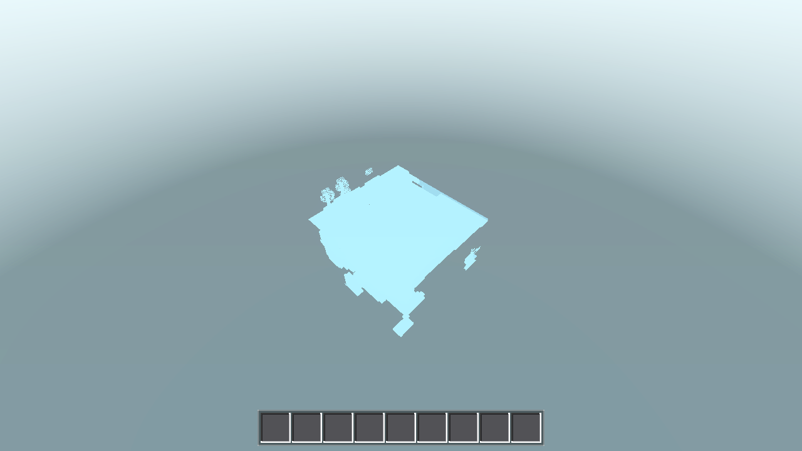

Builder (medium), 2026-08-26. Per the HEAVY-GATE PIPELINE this run verified G0 + SMOKE battery + the two MATINFO measurement runs (G3a PRE/POST) + 1 R=1 render, then EXIT. Heavy gates (G3b boundary+MESH_INFO, G4 full perf no-regression, G5 boundary r4 floor + RECSLICE r50 + flake ×N, G6 windows build) run LATER by the coordinator as a background job (absolute godot path /home/angrygiant/tools/godot/godot). All logs: .scratch/AC-0120/. Handoff log: continuity.md (RUN 2 section).
MATINFO = distinct_std=3 total_allocs=3 (constant — opaque/cutout/flower; the fluid-torch kind never exists in natural worlds) vs PRE distinct_std=180 total_allocs=325 (scales with build count). MINFO r4 surface-0 verts = 125552 EXACT (both PRE and POST). SMOKE battery ALL EXACT. Render visually identical (25/921600 px Δ, max channel Δ2 — fluid-anim phase jitter). Zero script errors in every run (G0 ×2, PRE, POST, battery, render). Awaiting coordinator heavy gates.godot/scenes/main.gd | 34 ++++++++++++++++++++++++++++++ (harness probe only, env-gated, off by default) godot/world/chunk.gd | 50 ++++++++++++++++++++++++++++++++++----------- (cache + 8 call-site swaps + static factories) tasks/AC-0120/continuity.md | 9 ++++++++ 3 files changed, 81 insertions(+), 12 deletions(-)
| file:line | change |
|---|---|
chunk.gd:45-48 | 4 new statics: _mat_atlas / _mat_ms (texture identity keys) / _mat_cache (kind → Material, ≤4 entries) / _mat_alloc_count (G3 build-path counter) |
chunk.gd:55-69 | static func _get_mat(kind, ms_tex) — lazy per-kind creation; identity-key invalidation on (Data.atlas_tex, ms_tex) for the opaque kind (texture-pack swap / AWECRAFT_MERGE toggle clears the set ONCE per texture generation); increments _mat_alloc_count |
chunk.gd:1525/1534/1549/1552 | sync build_mesh() call sites swapped: opaque→_get_mat("opaque", ms.tex), fluid→_get_mat("fluid"), cutout→_get_mat("cutout"), flower→_get_mat("flower") |
chunk.gd:1595/1604/1619/1622 | worker-handoff apply_accs() call sites swapped identically (all 8 sites; workers never touch the cache — assignment stays main-thread-only, AC-0107 handoff unchanged) |
chunk.gd:1326/1341/1348/1354 | 4 factories became static func (bodies VERBATIM — pure: only StandardMaterial3D + Data autoload, zero instance state; required because _get_mat is static) |
chunk.gd:1370 | _fluid_anim_material UNTOUCHED (its _fluid_material() fallback still resolves — instance func calling static is fine). Water/lava anim sites :1537/:1540/:1607/:1610 UNTOUCHED (shared Data.fluid_anim_mats). _merge_atlas UNTOUCHED |
main.gd:292 | const _ChunkScriptM = preload("res://world/chunk.gd") (harness-only) |
main.gd:297-318 | func _matinfo_counts() — walks mesh+fluid+flora instances of all built chunks (mesh_info() misses flora), dedupes by material instance id, returns built_chunks / distinct_std / distinct_all / total_allocs |
main.gd:4868-4869 | MATINFO print in _perf_test inside the existing AWECRAFT_MESH_INFO block (no new env var; off by default) |
main.gd:5293-5294 | Same gated MATINFO print in _boundary_test before final Debug.result (this is the coordinator's G3b post-crossings probe — ready, Run-2 did not run boundary) |
world.gd: NO CHANGE (per plan §2.3 — zero material refs there; handoff threadmesh_handoff unchanged).
# PRE (probe + factory counter added FIRST, cache NOT yet flipped — plan §5 G3a): MATINFO built_chunks=81 distinct_std=180 distinct_all=182 total_allocs=325 # POST (cache flipped): MATINFO built_chunks=81 distinct_std=3 distinct_all=5 total_allocs=3
distinct_std=180 (plan band 130–170; the fresh perf run does 804 build units and freed chunks' meshes still hold refs at walk time) + 2 shared water/lava ShaderMaterials = 182. total_allocs=325 (factory counter counts the call chain: cutout→opaque+cutout, flower→+2). Both metrics scale with build count — the per-build allocation the spec kills.distinct_std=3 (opaque/cutout/flower — fluid-torch kind absent in natural worlds), distinct_all=5 (3 std + 2 anim ShaderMaterials), total_allocs=3 — one alloc per kind at first contact, then 0 for every (re)build and every crossing; constant regardless of chunk count. The boundary+MESH_INFO post-crossings run (G3b, 20 crossings) is the coordinator's explicit evidence that total_allocs stays 3.| run | G0 / script errors | MINFO r4 surface-0 verts (81 built) | perf fields |
|---|---|---|---|
| PRE (before flip) | rc=0, 0 | 125552 EXACT | total 5737 / build 2348 / first_draw 192 / fog_ok / read_sync_gen 0 / all_meshed |
| POST (after flip) | rc=0, 0 | 125552 EXACT | total 5844 / build 2341 / first_draw 189 / p95 56 / fog_ok / read_sync_gen 0 / all_meshed / mem 49.89→79.18 MB (Δ29.29 MB vs PRE-anchor Δ29.72 MB) |
Invocation both runs: HOME=/tmp/dsh_home AWECRAFT_LOGIC=perf AWECRAFT_MESH_INFO=1 AWECRAFT_RADIUS=4 /home/angrygiant/tools/godot/godot --headless --path godot. Sum = verts[0] over built MINFO lines (method re-verified against Run-1's log first: reproduces 125552). G4's full no-regression gate (noise band, flake) is the coordinator's job; the POST numbers above are already within noise of the 5870/191/57 anchor.
HOME=/tmp/dsh_home AWECRAFT_BATTERY="player;interact;light;fluids;buckets;genhash" /home/angrygiant/tools/godot/godot --headless --path godot — rc=0, 0 script errors. Every arm EXACT:
player RESULT {"after_fly_y":37.78,"after_fwd":[8.5,5.68],"horizontal_moved":2.82,"is_on_floor":true,"jump_peak_y":36.43,"start":[8.5,35.0,8.5],...}
interact RESULT {"after_mine_cell":0,"after_place_cell":2,"breakable_id":2,"drop_spawned":true,"highlight_visible":true,"inv_grew":{"id":2,"n":1},"place_cell":[8,34,8],"place_ok":true,"target_cell":[8,34,8]}
light RESULT {"cave_eff":0,"surface_eff":15,"torch_far_after":9,"torch_far_before":0,"torch_level":14}
fluids RESULT {"sea_backed_before":1406,"sea_backed_final":1406,"sea_stable":true,"sea_surface_before":2730,"sea_surface_final":2730,"shore_after":[5,7],"sideways_lava_result":9,"source_after":[5,8],"water_delta":1,"water_on_lava_result":25}
buckets RESULT {"after_scoop":[0,0],"inv_place":{"id":139,"n":1},"inv_scoop":{"id":140,"n":1},"place_after":[5,8],"scoop_before":[5,8]}
genhash 25/25 GENHASH lines · GENMS 783 · MD5-of-25-lines = 61de26e9a542a5ce2db62e7157d6c018 (ANCHOR MATCH — and the 25 lines are byte-identical to Run-1's pre-change genhash.log)
Gate values all match the spec table: player is_on_floor true / 36.43 / 2.82 · interact true/true/2 · light 14/15/0/9 · fluids 2730/2730 + 1406/1406 stable, water_delta 1, shore [5,7], source [5,8], 25/9 · buckets [5,8]/[5,8] · genhash 25/25. Nothing moved — this is a material-reference-only change, as required.
HOME=/tmp/dsh_home AWECRAFT_SNAPSHOT=/home/angrygiant/github_projects/AweCraft/tasks/AC-0120/post_r1_iso.png AWECRAFT_CAM=iso AWECRAFT_RADIUS=1 \ xvfb-run -a /home/angrygiant/tools/godot/godot --path godot --rendering-method gl_compatibility

rc=0, 0 script errors (1280×720, 82077 B). Pixel-diff vs the current-tree reference tasks/AC-0078/ac0078_iso_r1.png: 25/921600 pixels differ, max channel-sum Δ2 — fluid-animation 1-frame phase jitter on water edges (the water shader animates by wall-clock frame_time; snapshot phases differ by one frame). Ocean translucency, terrain, tree/leaf cutouts visually identical. No A/B render gate per plan — the byte-identity fence is MINFO verts + battery + unchanged material properties, all green.
_get_mat opaque-guard (1 line). Plan §2.4 code verbatim re-clears the cache on every build: the per-chunk call order is opaque(ms.tex) → fluid/cutout/flower(ms_tex=null default), so after opaque sets _mat_ms=merged-tex, the next kind's null mismatches → clear; the next chunk's opaque mismatches again → POST would be ~4 allocs/build and the total_allocs=3 gate would fail. Fix: if _mat_atlas != Data.atlas_tex or (kind == "opaque" and _mat_ms != ms_tex) — matches §2.4's own key text ("opaque additionally identity-keyed on (Data.atlas_tex, ms_tex)"). All 8 call-site swaps unchanged from plan. Result verified: POST total_allocs=3.static func. Plan assumed the static _get_mat can call the 4 factories, but they were instance funcs → 5 parse errors on first G0 POST (Cannot call non-static function ... from the static function "_get_mat()"). Fix: all 4 factories static func, bodies verbatim (pure — only StandardMaterial3D + Data; no external callers, grep-verified). G0 then clean.AWECRAFT_SNAPSHOT path, which Godot rejects — "Can't save PNG at path"; prior renders AC-0078/AC-0106 used the absolute path, which was used here.)AWECRAFT_LOGIC=boundary AWECRAFT_RADIUS=4 AWECRAFT_MESH_INFO=1 → after 20 crossings expect MATINFO built_chunks=81 distinct_std=3 total_allocs=3 (probe already wired at main.gd:5293-5294) + boundary floors../build_windows.sh + 8080/5180 checks + commit/push (Run-2 did no git, per pipeline).AC-0120-results.html · Run-2 (builder, medium) · 2026-08-26 · SMOKE complete — awaiting coordinator heavy gates
.scratch/AC-0120/gates.log, 11/11 steps rc=0, 0 script errors.built_chunks=24 counts currently-meshed resident chunks (88 of 132 resident were unload-mesh-freed behind the player; mesh_built reset at world.gd:1045) — the gate values key on distinct/allocs, which are exact.VERDICT: AC-0120 PASSES — shared material cache ships. 4 statics + lazy _get_mat + 8 call-site swaps; PRE 180 distinct / 325 allocs → POST 3/3; MINFO 125552 exact; battery exact. Download: localhost / LAN.